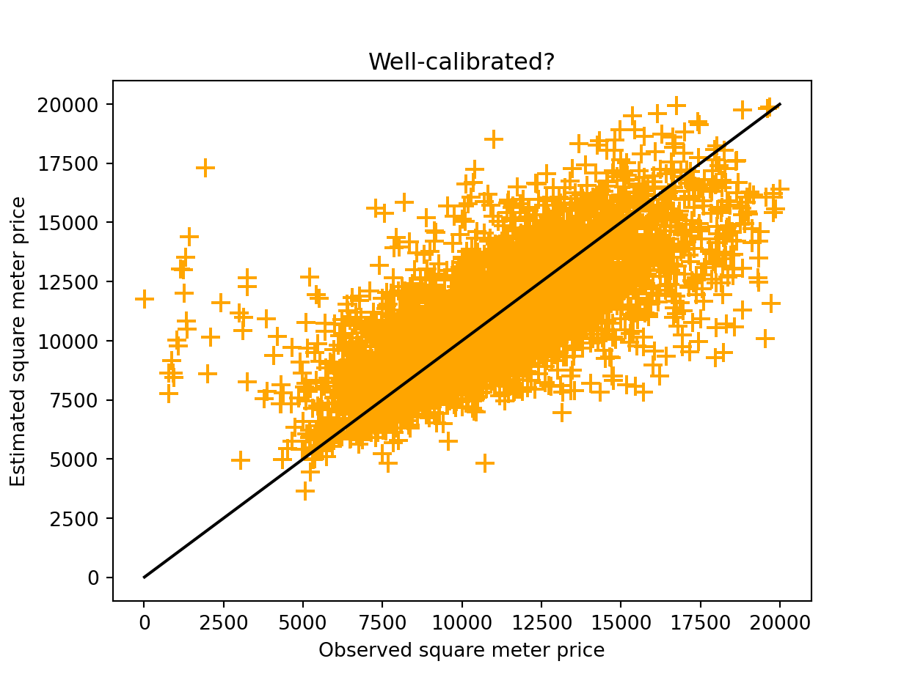
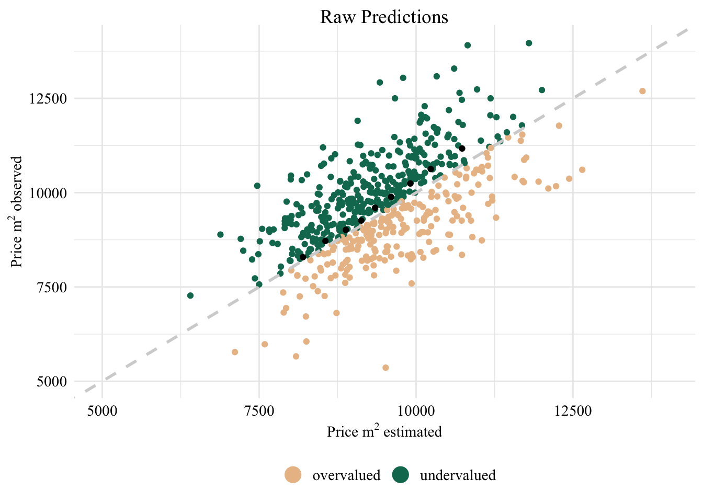
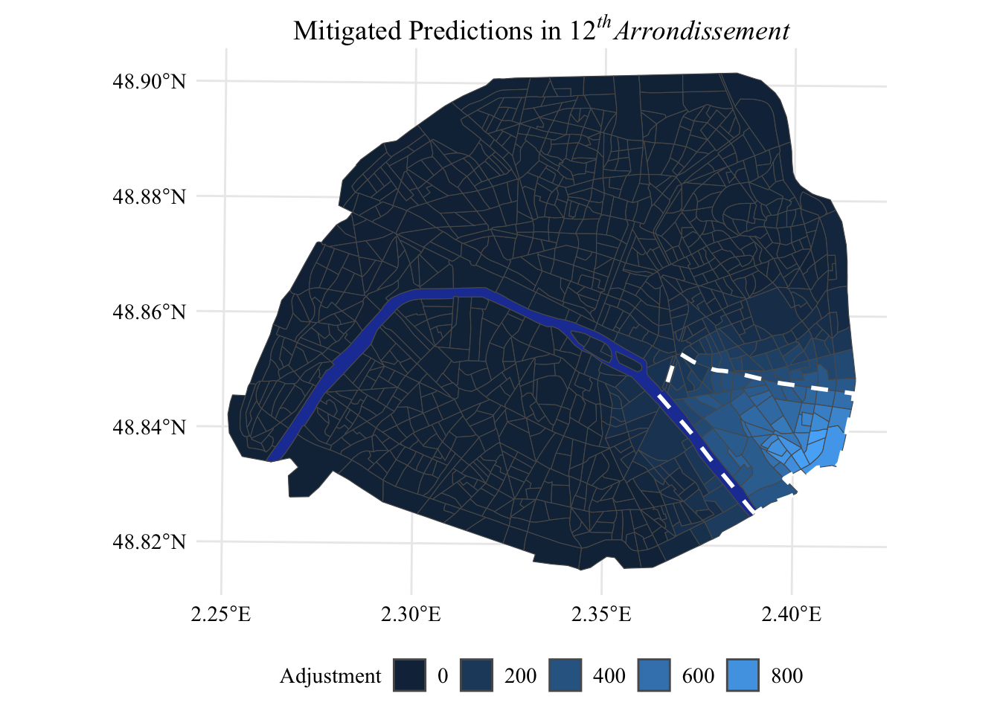

import pandas as pd
import numpy as np
# Real-estate data
paris_data = pd.read_csv("../data/data_clean_all.csv", index_col=0)5 Mitigation
\[ \newcommand{\argmax}[1]{\underset{#1}{\operatorname{arg}\!\operatorname{max}}\;} \newcommand{\one}{\mathds{1}} \]
This chapter presents strategies to mitigate the biases mentioned in Chapter 3 (calibration bias) and in Chapter 4 (fairness bias).
The methods presented in previous chapters do not require any knowledge of the predictive model or of the data used during its learning process. Thus, post-processing mitigation approaches naturally emerge as the most suitable choices.
The aim is to use the Demographic Parity (DP) notion of fairness, which is suitable for multi-class classification tasks. To that end, we will rely on constrained optimization approach proposed in Denis et al. (2021), to achieve optimal fair classifiers with respect to misclassification risk under the DP constraint.
Python
Note that the codes provided in this Chapter are written in python.
5.1 Background
Let \(\hat{\boldsymbol{p}}\) represent the confidence scores obtained with a predictive model. Assuming the associated predictive model is fairness-aware, \(\hat{\boldsymbol{p}}(\boldsymbol{x}, a)\) is therefore defined on \(\mathcal{X}\times \mathcal{A}\), considering \(\mathcal{A}\) a binary set.
Following Denis et al. (2021), and readjusting the result for exact fairness, the new and fair scores \(\hat{\boldsymbol{p}}^{(\text{fair})} = (\hat{p}^{(\text{fair})}_1, \ldots, \hat{p}^{(\text{fair})}_K)\) are given by \[ \hat{p}^{(\text{fair})}_k(\boldsymbol{x}, a) = \hat{\mathbb{P}}(A=a)\cdot (\hat{p}_{k}(\boldsymbol{x}, a) - a \cdot\hat{\lambda}_k)\, ,\;\; \mbox{for all }(\boldsymbol{x}, a)\in \mathcal{X}\times {\mathcal{A}}, \]
where this technique is dedicated to enforcing DP-fairness of the overall classification rule by shifting the estimated conditional probabilities in an optimal manner, as dictated by the calibrated parameters \(\hat{\boldsymbol{\lambda}} = (\hat{\lambda}_1, \ldots, \hat{\lambda}_K)\) (refer to Denis et al. (2021) for more details about its optimization).
Given these new scores, the associated optimal (DP-fair) predicted class is simply \(\argmax{k\in [K]} p^{(\text{fair})}_{k}\).
We let the original price be \(\hat{Y} := h(X, A)\), where \(h\) is an unknown predictive model defined on \(\mathcal{X}\times\mathcal{A}\). We define the unfairness under DP as follows:
\[ \mathcal{U}_{DP}(h) := \mathbb{P}(\hat{Y} \in [q_{i}, q_{i+1}] | A = a) - \mathbb{P}(\hat{Y} \in [q_{i}, q_{i+1}] | A = b) \]
5.2 Load and Clean Data
Let us load the real estate data first, those obtained in Section 4.2 in Chapter 4.
For convenience, we create a column with the arrondissement number.
paris_data['A'] = paris_data['NOM_COM'].str.extract(r'(\d+)').astype(float).astype('Int64')Let us load the scores obtained in Section 3.2 in Chapter 3.
distances = pd.read_csv("../data/distances.csv", index_col=0)Let us visualize the estimated prices as a function of the observed prices. The plot is visible in Figure 5.1.
Display the codes used to create the Figure.
import matplotlib.pyplot as plt
import numpy as np
range_min = min(np.min(paris_data.pm2), np.min(paris_data.pm2_estimated))
range_max = max(np.max(paris_data.pm2), np.max(paris_data.pm2_estimated))
x = np.linspace(range_min, range_max, 1000)
plt.plot(x, x, color="black")
plt.scatter(paris_data.pm2, paris_data.pm2_estimated, color="orange", marker="+", s=100)
plt.xlabel("Observed square meter price")
plt.ylabel("Estimated square meter price")
plt.title("Well-calibrated?")
plt.show()
Let us define variables with the observed values (y), and with predicted ones (y_pred).
y = paris_data.pm2
y_pred = paris_data.pm2_estimatedLet us discretize the data. We will consider 5 bins, as in previous chapters.
K = 5
# Discretization of y
cuts = np.quantile(np.array(y), q=np.linspace(0, 1, num = K+1))
# apply on pred
y_pred_categ = np.digitize(np.array(y_pred), bins=cuts, right=True)
y_pred_categ[y_pred_categ == 0] = 1
# apply on test
y_categ = np.digitize(np.array(y), bins=cuts, right=True)
y_categ[y_categ == 0] = 1The discretized values are added to the dataset:
paris_data["y_categ"] = y_categ
paris_data["y_pred_categ"] = y_pred_categLet us have a look at the accuracy:
from sklearn.metrics import accuracy_score
# Calculate accuracy score
accuracy = accuracy_score(y_categ, y_pred_categ)
print(f'Accuracy: {accuracy:.2f}')Accuracy: 0.46Now, we can apply the softmax function to the predicted scores computed in Chapter 3.
from scipy.special import softmax
scores = softmax(-distances, axis=1)
scores = pd.DataFrame(
scores, index = distances.index, columns=distances.columns)scores.reset_index() id 1 2 3 4 5
0 1624836 0.254176 0.480247 0.176673 0.064994 0.023910
1 1613636 0.014758 0.040116 0.109047 0.296419 0.539660
2 1612621 0.016790 0.045640 0.124061 0.337233 0.476276
3 1605927 0.410082 0.379857 0.139741 0.051408 0.018912
4 1605922 0.489094 0.328980 0.121025 0.044523 0.016379
... ... ... ... ... ... ...
11164 236654 0.043620 0.118571 0.322309 0.376861 0.138639
11165 234198 0.030518 0.082957 0.225502 0.483246 0.177776
11166 219084 0.046252 0.125727 0.341760 0.355485 0.130776
11167 212675 0.045214 0.122904 0.334087 0.363918 0.133878
11168 131156 0.025876 0.070337 0.191196 0.519726 0.192865
[11169 rows x 6 columns]# index reset here to avoid showing real IDWe need to check if some observations which are present in only one of the two datasets. Let us first identify those, if any. The cases in the real-estate dataset but not in the scores dataset:
for ind in paris_data.index:
if ind not in scores.index:
print(ind)And the cases in the scores dataset but not in the real-estate one:
for ind in scores.index:
if ind not in paris_data.index:
print(ind)We make sure the IRIS codes are stored as integers.
paris_data["CODE_IRIS"] = paris_data["CODE_IRIS"].astype(int)Let us add the scores to the real-estate data.
paris_data = pd.concat((paris_data, scores), axis=1)5.3 Helper Functions
Let us define some helper functions.
from scipy.optimize import minimize, LinearConstraint
def optposSLSQP(fun, n_classes):
ineq_cons = {
'type': 'ineq',
'fun' : lambda x: x}
lam0 = np.zeros(2*n_classes)
res = minimize(
fun,
lam0,
constraints=[ineq_cons],
options={'ftol': 1e-9, 'disp': False},
method='SLSQP')
lam = res.x
return lam[:n_classes], lam[n_classes:]We define the prepare_fairness() function.
def prepare_fairness(y_probs, binary_sensitive):
ind0 = (binary_sensitive == -1)
ind1 = (binary_sensitive == 1)
p0 = np.mean(ind0)
p1 = np.mean(ind1)
ps = np.array([p0, p1])
y_prob_dict = dict()
y_prob_dict[0] = y_probs[ind0, :]
y_prob_dict[1] = y_probs[ind1, :]
return y_prob_dict, psWe also define the fair_soft_max() function. This function readjusts scores.
def fair_soft_max(y_probs, binary_sensitive, K, c = 0.1, sigma = 10**(-5), epsilon_fair = 0.01):
"""
for the optimization technique we use "slsqp" optimization, but other methodologies can be used
"""
# computation of lambda (soft and hard)
y_prob_dict, ps = prepare_fairness(y_probs, binary_sensitive)
n_classes = K
def bivar_fairness_soft(lam, n_classes = n_classes, c = c):
res = 0
lamb = lam[:n_classes]
beta = lam[n_classes:]
for s in [0,1]:
val = y_prob_dict[s]*ps[s] - (2*s-1)*(lamb - beta)
res += np.mean(np.sum(softmax(val/c, axis=1)*val, axis=1)) # Smooth arg max
res += epsilon_fair * np.sum(lamb + beta)
return res
lam_soft, beta_soft = optposSLSQP(fun = bivar_fairness_soft, n_classes = n_classes)
# inference with and without fairness
index_0 = np.where(binary_sensitive == -1)[0]
index_1 = np.where(binary_sensitive == 1)[0]
eps = np.random.uniform(0, sigma, (y_probs.shape))
y_prob_fair_soft = np.zeros(y_probs.shape)
y_prob_fair_soft[index_0] = ps[0]*(y_probs[index_0]+eps[index_0]) - (-1)*(lam_soft-beta_soft)
y_prob_fair_soft[index_1] = ps[1]*(y_probs[index_1]+eps[index_1]) - 1*(lam_soft-beta_soft)
y_pred_fair_soft = np.argmax(y_prob_fair_soft, axis = 1) + 1
return y_pred_fair_soft, y_prob_fair_soft, index_0, index_1We also define the unfairness() function, which computes unfairness of two populations.
def unfairness(data1, data2):
"""
compute the unfairness of two populations
"""
K = int(np.max((np.max(data1), np.max(data2))))+1
nu_0 = np.zeros(K)
nu_1 = np.zeros(K)
pos, counts = np.unique(data1, return_counts=True)
nu_0[pos.astype(int)] = counts/len(data1)
pos, counts = np.unique(data2, return_counts=True)
nu_1[pos.astype(int)] = counts/len(data2)
unfair_value = np.abs(nu_0 - nu_1).max()
return unfair_value5.4 DP-Fair Predictions
We will focus on some IRIS. For each IRIS,
groups = pd.read_csv("../data/some_locations.csv")
groups.shape(11400, 22)We can add these columns to the paris_data table.
groups = pd.merge(paris_data.reset_index()[["id", "1", "2", "3", "4", "5", "y_categ", "y_pred_categ"]], groups, on='id', how='left')
groups.shape(11205, 29)Then, we will iterate on multiple areas of interest. For an area of interest, for example, mars_neigh_1, which corresponds to the IRIS in Champs-de-Mars and their immediate neighbors, we will compute the unfairness with respect to the rest of Paris. When we consider mars_neigh_2 as the area of interest, the values used to define Champs-de-Mars become the IRIS of Montmartre, its immediate neighbors, and the neighbors of its neighbors.
np.random.seed(42)
y_probs = np.array(groups[["1", "2", "3", "4", "5"]])
y_test = groups.y_categ
y_pred_fair_multi = []
y_prob_fair_multi = []
debiased_groups = pd.DataFrame()
debiased_groups_scores = pd.DataFrame()
debiased_groups[["id", "CODE_IRIS"]] = groups[["id", "CODE_IRIS"]]
debiased_groups_scores[["id", "CODE_IRIS"]] = groups[["id", "CODE_IRIS"]]
# Looping over different IRIS to consider as protected
for sensitive in ['mars_neigh_1', 'mont_neigh_1', 'mars_neigh_2',
'mont_neigh_2', 'mars_neigh_3', 'mont_neigh_3', 'mars_neigh_4',
'mont_neigh_4', 'mars_neigh_5', 'mont_neigh_5', 'mars_neigh_6',
'mont_neigh_6', 'mars_neigh_7', 'mont_neigh_7', 'mars_neigh_8',
'mont_neigh_8', 'mars_neigh_9', 'mont_neigh_9', 'in_12', 'in_20']:
# Identity observations in the sensitive region
binary_sensitive = np.array(groups[sensitive])
# Compute mitigated scores
y_pred_fair, y_prob_fair, index_0, index_1 = fair_soft_max(
y_probs,
binary_sensitive,
K,
c = 0.00001,
sigma = 0.00001,
epsilon_fair = 0.00001
)
y_pred_fair_multi.append(y_pred_fair)
y_prob_fair = softmax(y_prob_fair, axis=1)
y_prob_fair_multi.append(y_prob_fair)
# Add the mitigated predicted class and scores in the table
debiased_groups["DP_class_for_" + sensitive] = y_pred_fair
for k in range(K):
debiased_groups_scores[f"DP_score_{k+1}_" + sensitive] = y_prob_fair[:,k]
print("For:", sensitive)
unfair_measure = np.max((
unfairness(groups.y_pred_categ, groups.y_pred_categ[index_1]),
unfairness(groups.y_pred_categ, groups.y_pred_categ[index_0])))
print("accuracy, unfairness (baseline): ",
accuracy_score(np.array(y_test), groups.y_pred_categ),
"\t", unfair_measure)
unfair_measure = np.max((
unfairness(y_pred_fair, y_pred_fair[index_1]),
unfairness(y_pred_fair, y_pred_fair[index_0])))
print("accuracy, unfairness (mitigated): ",
accuracy_score(np.array(y_test), y_pred_fair), "\t", unfair_measure)
print()For: mars_neigh_1
accuracy, unfairness (baseline): 0.46336456938866577 0.7597182380314911
accuracy, unfairness (mitigated): 0.46247211066488175 0.08508956460763689
For: mont_neigh_1
accuracy, unfairness (baseline): 0.46336456938866577 0.25024187995543623
accuracy, unfairness (mitigated): 0.4607764390896921 0.004458156393048279
For: mars_neigh_2
accuracy, unfairness (baseline): 0.46336456938866577 0.505304112830849
accuracy, unfairness (mitigated): 0.4573850959393128 0.004075728632382203
For: mont_neigh_2
accuracy, unfairness (baseline): 0.46336456938866577 0.16690582801924722
accuracy, unfairness (mitigated): 0.4612226684515841 0.001079962982746513
For: mars_neigh_3
accuracy, unfairness (baseline): 0.46336456938866577 0.3448310199863782
accuracy, unfairness (mitigated): 0.4508701472556894 0.0043185607928791225
For: mont_neigh_3
accuracy, unfairness (baseline): 0.46336456938866577 0.16506226927913678
accuracy, unfairness (mitigated): 0.4596162427487729 0.0011662812867632155
For: mars_neigh_4
accuracy, unfairness (baseline): 0.46336456938866577 0.22969094048826993
accuracy, unfairness (mitigated): 0.4459616242748773 0.0018601958130773921
For: mont_neigh_4
accuracy, unfairness (baseline): 0.46336456938866577 0.15938787831062814
accuracy, unfairness (mitigated): 0.45872378402498887 0.000677218678636099
For: mars_neigh_5
accuracy, unfairness (baseline): 0.46336456938866577 0.21681754116737956
accuracy, unfairness (mitigated): 0.43525211958946897 0.0002924979048987142
For: mont_neigh_5
accuracy, unfairness (baseline): 0.46336456938866577 0.1034107541276216
accuracy, unfairness (mitigated): 0.45765283355644804 0.0004524765729584934
For: mars_neigh_6
accuracy, unfairness (baseline): 0.46336456938866577 0.20261338744476481
accuracy, unfairness (mitigated): 0.4145470771976796 8.529851586819293e-05
For: mont_neigh_6
accuracy, unfairness (baseline): 0.46336456938866577 0.0756902615492353
accuracy, unfairness (mitigated): 0.4556001784917448 0.00026638001965606506
For: mars_neigh_7
accuracy, unfairness (baseline): 0.46336456938866577 0.1991717251102052
accuracy, unfairness (mitigated): 0.39134315037929496 0.00010365307004758795
For: mont_neigh_7
accuracy, unfairness (baseline): 0.46336456938866577 0.05664125648676674
accuracy, unfairness (mitigated): 0.46166889781347614 7.520135124639005e-05
For: mars_neigh_8
accuracy, unfairness (baseline): 0.46336456938866577 0.1739308640326483
accuracy, unfairness (mitigated): 0.3741186970102633 0.00011519585530833654
For: mont_neigh_8
accuracy, unfairness (baseline): 0.46336456938866577 0.04690105451043944
accuracy, unfairness (mitigated): 0.4610441767068273 8.45487212005891e-05
For: mars_neigh_9
accuracy, unfairness (baseline): 0.46336456938866577 0.13652482790770132
accuracy, unfairness (mitigated): 0.3773315484158858 0.0002381354269786473
For: mont_neigh_9
accuracy, unfairness (baseline): 0.46336456938866577 0.04315163871374325
accuracy, unfairness (mitigated): 0.45194109772423025 1.3335022436167243e-05
For: in_12
accuracy, unfairness (baseline): 0.46336456938866577 0.17290610370245987
accuracy, unfairness (mitigated): 0.4574743418116912 0.0036579924032172084
For: in_20
accuracy, unfairness (baseline): 0.46336456938866577 0.32289468675010846
accuracy, unfairness (mitigated): 0.44810352521195895 0.002942617400448738
<string>:28: PerformanceWarning: DataFrame is highly fragmented. This is usually the result of calling `frame.insert` many times, which has poor performance. Consider joining all columns at once using pd.concat(axis=1) instead. To get a de-fragmented frame, use `newframe = frame.copy()`
<string>:28: PerformanceWarning: DataFrame is highly fragmented. This is usually the result of calling `frame.insert` many times, which has poor performance. Consider joining all columns at once using pd.concat(axis=1) instead. To get a de-fragmented frame, use `newframe = frame.copy()`At the end of the loop, we have the DP-fair predicted class as well as the associated scores, for all the regions considered.
debiased_groups_scores.drop("id", axis=1) CODE_IRIS DP_score_1_mars_neigh_1 ... DP_score_4_in_20 DP_score_5_in_20
0 751186920 0.208233 ... 0.172082 0.165246
1 751166219 0.162854 ... 0.213208 0.267179
2 751166305 0.163832 ... 0.222252 0.252626
3 751197403 0.243304 ... 0.169853 0.164422
4 751197315 0.262427 ... 0.168257 0.163542
... ... ... ... ... ...
11200 751155803 0.169643 ... 0.232087 0.185308
11201 751155815 0.166650 ... 0.255433 0.191505
11202 751155815 0.170142 ... 0.227534 0.183985
11203 751155815 0.169949 ... 0.229324 0.184510
11204 751155816 0.165405 ... 0.263685 0.193772
[11205 rows x 101 columns]Let us look at the number of unique IRIS.
len(np.unique(debiased_groups_scores.reset_index().id))11151The number of values is lower the number of rows in the table with debiased scores. Let us isolate the duplicated rows:
duplicate_rows = debiased_groups_scores[
debiased_groups_scores.reset_index().duplicated(subset='id', keep=False)
]We can look at those:
duplicate_rows.drop("id", axis=1) CODE_IRIS DP_score_1_mars_neigh_1 ... DP_score_4_in_20 DP_score_5_in_20
193 751186919 0.174791 ... 0.191386 0.172225
194 751186919 0.174792 ... 0.191387 0.172224
195 751186919 0.174791 ... 0.191387 0.172224
196 751186919 0.174791 ... 0.191386 0.172224
197 751186919 0.174791 ... 0.191387 0.172224
... ... ... ... ... ...
2536 751093603 0.167135 ... 0.251988 0.190650
4101 751020703 0.164730 ... 0.233722 0.235088
4102 751020703 0.164728 ... 0.233721 0.235087
4103 751020703 0.164554 ... 0.231059 0.239069
4104 751020703 0.164554 ... 0.231059 0.239070
[72 rows x 101 columns]Now, we can save the results. Prior to that, we add the ID of the cases in a column.
debiased_groups.set_index('id', inplace=True)
debiased_groups_scores.set_index('id', inplace=True)Then we can save the tables:
debiased_groups.to_csv("../data/debiased_groups.csv")
debiased_groups_scores.to_csv("../data/debiased_groups_scores.csv")5.5 Vizualization
Let us now visualize some results. First, we can look at the observed versus predicted prices in the 12th arrondissement.
Note
The visualization section switches to R instead of python.
Display the setting codes
library(tidyverse)
library(wesanderson)
library(sf)
# Graphs----
font_main = font_title = 'Times New Roman'
extrafont::loadfonts(quiet = T)
face_text='plain'
face_title='plain'
size_title = 14
size_text = 11
legend_size = 11
global_theme <- function() {
theme_minimal() %+replace%
theme(
text = element_text(family = font_main, size = size_text, face = face_text),
legend.text = element_text(family = font_main, size = legend_size),
axis.text = element_text(size = size_text, face = face_text),
plot.title = element_text(
family = font_title,
size = size_title,
hjust = 0.5
),
plot.subtitle = element_text(hjust = 0.5)
)
}
# Colours
colors_ <- wes_palette('Rushmore1')
col_seine <- "#2140A3"5.5.1 Data
Let us load the real estate data (in the R session) that were cleaned in Section 1.5, in Chapter 1.
load("../data/data_clean_all.rda")Partiionning of the observed prices:
limits_quants <-
data_clean_all |>
pull(pm2) |>
quantile(seq(0,1,0.2)) |>
unname()Let us also load the Parisian map saved in Section 1.3 from Chapter 1.
load("../data/shapes.rda")In Section 2.3 from Chapter 2, we computed the minimum distance from one iris to another, considering distances up to 30. We will also need this informations.
neighbours_all <- read_csv('../data/neighbours/all_neighbours_paris.csv')Let us load the mitigated predictions obtained in Section 5.4:
debiased_groups <- read_csv("../data/debiased_groups.csv")
debiased_groups_scores <- read_csv("../data/debiased_groups_scores.csv")5.5.2 Smoothed Prices
Let us get the predicted classes when considering that the 12th arrondissement should be considered as protected.
debiased_groups_12 <-
debiased_groups |>
select(CODE_IRIS, DP_class_for_in_12, id) |>
unique()We discretize into quantile-based classes the selling and estimated price, and then calculate the average in each bin, at the IRIS level.
simple_regroup <-
data_clean_all |>
# Discretize
mutate(
cut_observed = cut(
pm2,
limits_quants,
c(1:(length(limits_quants) - 1))
)
) |>
mutate(
cut_predictions = cut(
pm2_estimated,
limits_quants,
c(1:(length(limits_quants) - 1))
)
) |>
# Average in each bin
group_by(cut_observed) |>
mutate(
mean_observed_cut = mean(pm2)
) |>
ungroup() |>
group_by(cut_predictions) |>
mutate(
mean_estimated_cut = mean(pm2_estimated)
) |>
ungroup() |>
select(id, CODE_IRIS, pm2, contains('cut')) |>
unique() %>%
{.->> data_mean_per_group} |>
group_by(CODE_IRIS) |>
summarise(
mean_real = mean(pm2),
mean_cut = mean(mean_estimated_cut)
)
simple_regroup# A tibble: 826 3
CODE_IRIS mean_real mean_cut
<chr> <dbl> <dbl>
1 751010101 11288. 13685.
2 751010201 11798. 12391.
3 751010202 12887. 12699.
4 751010203 13550. 12792.
5 751010204 13631. 12204.
6 751010301 12743. 13054.
7 751010401 14040. 12978.
8 751020601 13230. 12699.
9 751020701 12864. 12463.
10 751020702 12267. 11789.
# 816 more rowsIn the process, we also created a tibble (data_mean_per_group) with all the observations from the real-estate data, giving the ID of the observation, the IRIS it is from, the observed price, the bin the observed price is in, the bin the estimated price is in, augmented with the average price (selling and observed) in the corresponding bins
For example, for the first row in the data:
data_mean_per_group |> slice(1) |> select(-id) |> as.data.frame() CODE_IRIS pm2 cut_observed cut_predictions mean_observed_cut
1 751186920 9500 2 2 9431.742
mean_estimated_cut
1 9445.654data_clean_all$pm2_estimated[1][1] 9227.013Let us extract the average estimated price in each constituted bins, in the whole dataset.
mapping_prices <-
data_mean_per_group |>
select(id, CODE_IRIS, cut_predictions, mean_estimated_cut) |>
select(cut_predictions, mean_estimated_cut) |>
unique() |>
select(
group_cut = cut_predictions,
value_cut = mean_estimated_cut
)For each observation in the dataset, we have (in data_mean_per_group):
- the IRIS (
CODE_IRIS) - the selling price (
pm2) - the quintile-bin the selling price is in (
cut_observed) - the average selling price in that bin (
mean_observed_cut) - the quintile-bin the estimated price is in (
cut_predictions) - the average selling price in that bin (
mean_estimated_cut).
In the tibble debiased_groups_12, we have, for the same observations:
- the IRIS (
CODE_IRIS) - the fair predicted class (
DP_class_for_in_12).
In the tibble mapping_prices, we have:
- the average estimated price in each quintile-defined bins (
value_cut) - the bins they refer to (
group_cut).
For each observation, we will consider the average selling price in the bin defined used the estimated price (mean_estimated_cut). At the IRIS level, we calculate the average of those values to obtain mean_cut_orig. This corresponds to the average estimated price.
We also consider the average estimated price in each quintile-defined bins (value_cut) the observations have be assigned to after mitigation, and compute, at the IRIS level, the average of those values to obtain mean_cut_mitig. This corresponds to the average price after mitigation.
Then, we compute the difference between the two: mean_cut_mitig - mean_cut_orig.
diff_viz <-
data_mean_per_group |>
select(id, CODE_IRIS, cut_predictions, mean_estimated_cut) |>
right_join(
debiased_groups_12 |>
select(id, DP_class_for_in_12),
relationship = "many-to-many"
) |>
mutate(DP_class_for_in_12 = as.factor(DP_class_for_in_12)) |>
left_join(
mapping_prices,
by = c('DP_class_for_in_12'='group_cut')
) |>
group_by(CODE_IRIS) |>
summarise(
mean_cut_orig = mean(mean_estimated_cut),
mean_cut_mitig = mean(value_cut)
) |>
mutate(diff = mean_cut_mitig - mean_cut_orig)Joining with `by = join_by(id)`Now that we have obtained differences between predicted prices before and after mitigation, let us spatially smooth these values (see Chapter 2). We consider here the neighbors distant up to 8.
smoothed_diff <-
neighbours_all |>
mutate(distance = distance + 1) |>
filter(distance <= 7) |>
mutate(
distance = if_else(from_iris == to_iris, 1, distance),
to_iris = as.character(to_iris)
) |>
left_join(
diff_viz,
by = c('to_iris'='CODE_IRIS')
) |>
mutate(inverse_weight = 1/distance) |>
mutate(value = diff * inverse_weight) |>
drop_na() |>
group_by(from_iris) |>
summarise(
total_weights = sum(inverse_weight),
total_value = sum(value)
) |>
mutate(smoothed_diff = total_value / total_weights) |>
ungroup() |>
mutate(CODE_IRIS = as.character(from_iris), smoothed_diff)5.5.3 Plots
Now we can visualize the impact of the mitigation. First, we create a graph (Figure 5.2) that shows the under- and overvaluation in the real-estate market in the 12th arrondissement.
Display the (R) codes used to create the Figure.
bins <- 10
calib_over <-
data_clean_all |>
filter(NOM_COM == 'Paris 12e Arrondissement') |>
filter(
pm2 < 14000 & pm2 > 5000,
pm2_estimated < 14000 & pm2_estimated > 5000
) |>
mutate(is_under = if_else(pm2 > pm2_estimated, 'undervalued', 'overvalued')) %>%
{.->> data_points_12} |>
ggplot() +
geom_point(
mapping = aes(
x = pm2_estimated,
y = pm2,
color = is_under)
) +
geom_point(
mapping = aes(
x = estim_quant,
y = observed_quant
),
data = tibble(
estim_quant = quantile(
data_points_12$pm2_estimated,
seq(0.1,0.9,1/bins)),
observed_quant = quantile(
data_points_12$pm2,
seq(0.1,0.9,1/bins)),
)
) +
geom_abline(
slope=1,
color='lightgrey',
lty='dashed',
lwd=1
) +
xlim(c(5000, 14000)) +
ylim(c(5000, 14000)) +
scale_color_manual(values=c(colors_[2], colors_[3])) +
global_theme() +
guides(color = guide_legend(title='', override.aes = list(size=5))) +
xlab(expression(paste('Price ', m^2, ' estimated'))) +
ylab(expression(paste('Price ', m^2, ' observed'))) +
ggtitle("Raw Predictions") +
theme(legend.position = "bottom")
calib_over
Now, let us visualize on a map (Figure 5.3) how the estimated values change after the correction of the unfairness bias, in the 12th arrondissement.
Display the (R) codes used to create the Figure.
p_mitig <-
shapes_paris |>
left_join(smoothed_diff, by = "CODE_IRIS") |>
ggplot() +
geom_sf(mapping = aes(fill = smoothed_diff)) +
geom_sf(
data=shapes_seine,
fill = col_seine
) +
geom_sf(
data = shapes_paris |>
filter(NOM_COM == "Paris 12e Arrondissement") |>
st_union(),
colour = "white", lty = 2, linewidth = 1,
fill = NA
) +
global_theme() +
guides(fill = guide_legend(title = 'Adjustment')) +
theme(legend.position = 'bottom') +
ggtitle(expression(paste(
'Mitigated Predictions in ', 12^italic('th'), italic('Arrondissement')))
)
p_mitig